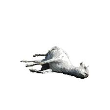

The Purging of the Goats
Goats were introduced to the Galápagos Islands in the 16th century by explorers and sailors as a food source during their long voyages. Unfortunately, their presence led to significant ecological imbalances. Unchecked reproduction and foraging behavior caused devastation to the islands' delicate ecosystems.
Efforts to control the goat population began in the mid-20th century, with extensive eradication programs implemented to restore the islands' ecological balance. Through these conservation efforts, the Galápagos Islands have made strides in mitigating the damage caused by introduced goat populations, allowing the native flora and fauna to thrive once more.
Eradication Methods
- Foot Infantry
- Aerial Hunting via Helicopter
- Use of Spy Goats
- Spy Goats would be used to guide hunters to larger groups of goats
- After the new found groups of goats were eradicated, spy goats would be reused to find other groups
Embedded Video
Tableau Graph